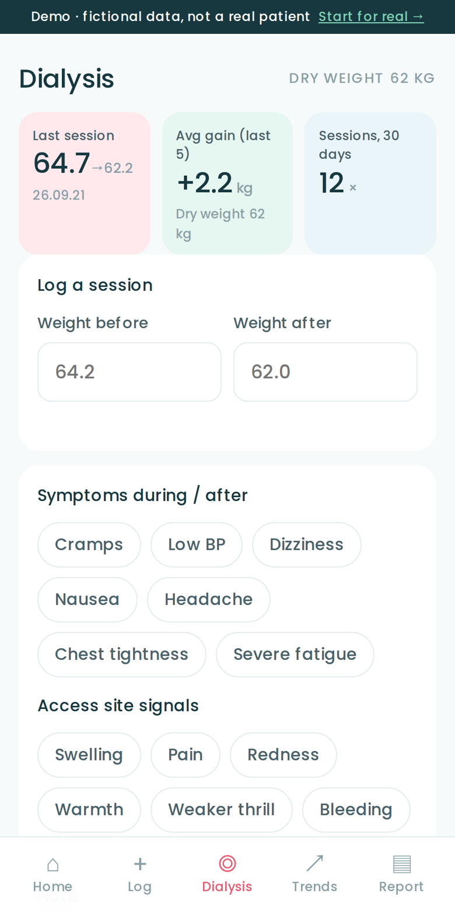
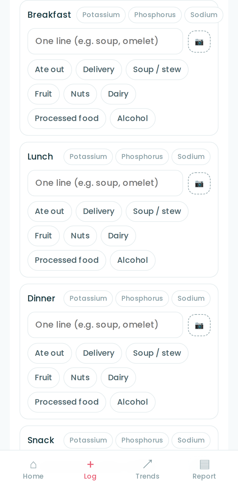

My Beanie is built to help people hold steady before dialysis is ever needed. But those already on dialysis have more to keep track of. Switch on "Dialysis log" in Settings and one more screen appears — and for most people, off is the right setting.
For an app anyone worried about their kidneys can use, the first screen has to hold only what applies to everyone — blood pressure, weight, meals. Dialysis is a layer on top.
Blood pressure, weight, labs, body signals, meals by slot. With the add-on off, dialysis is mentioned nowhere in the app.
Settings › Add-on · Dialysis log — choose hemodialysis or peritoneal, and a "Dialysis" tab appears at the bottom. Switch it off any time; the records stay.
No verdicts, no alarms. Dry weight and fluid allowance are numbers your care team sets and you write down; the app only places today's value beside them.
Numbers the unit already measures. The app keeps them in the patient's hands, so this session can sit beside the last one.

For hemodialysis, enter weight before and after and the gain since the last session is worked out. For peritoneal, log exchanges, weight and ultrafiltration. Home shows the average gain over the last five sessions.
Write the dry weight your care team set in Settings and it appears as a dashed line on the trend chart. Count fluids in 200 ml cups with a tap; the daily goal is yours to set.
Cramps, low BP, dizziness, nausea, headache, chest tightness, severe fatigue — and at the access site, swelling, pain, redness, warmth, weaker thrill, bleeding. Tap only what applies. Counts go on the One-Pager.
Register names only — phosphate binder, BP medication — and tick them on the Log screen. The One-Pager carries the check rate for the period. Doses and timing are never set by the app.
Open to everyone, dialysis or not. On dialysis, you will simply use it more often.
One line and a photo per slot, plus pattern chips — ate out, delivery, soup, fruit, nuts, dairy, processed food, alcohol. There is no field for nutrients.
Tag a meal that held something to be careful with. You set your own daily count goal; the app shows how many times today. No milligrams, no verdicts.

The gear at the top right of Home.
Choose hemodialysis or peritoneal, add the dry weight your care team set if you have one. Save.
A "Dialysis" tab shows at the bottom, and the One-Pager gains a dialysis summary automatically.